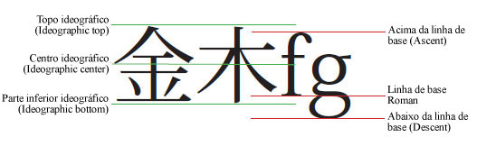
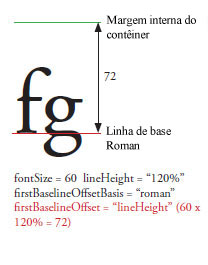
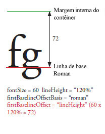
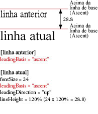
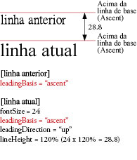
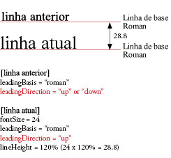

| Pacote | flashx.textLayout.formats |
| Interface | public interface ITextLayoutFormat |
| Implementadores | ContainerController, FlowElement, TextLayoutFormat |
| Versão da linguagem: | ActionScript 3.0 |
| Versões de runtime: | Flash Player 10, AIR 1.5 |
| Propriedade | Definido por | ||
|---|---|---|---|
| alignmentBaseline : * [somente leitura]
Especifica a linha de base à qual a linha de base dominante se alinha. | ITextLayoutFormat | ||
| backgroundAlpha : * [somente leitura]
Valor de Alfa (transparência) do plano de fundo (adota o valor padrão se não for definido durante o cascateamento). | ITextLayoutFormat | ||
| backgroundColor : * [somente leitura]
Cor do plano de fundo do texto (adota o valor padrão se não for definido durante o cascateamento). | ITextLayoutFormat | ||
| baselineShift : * [somente leitura]
Quantidade para transferir a linha de base do valor de dominantBaseline. | ITextLayoutFormat | ||
| blockProgression : * [somente leitura]
Especifica uma progressão vertical ou horizontal da colocação de linha. | ITextLayoutFormat | ||
| breakOpportunity : * [somente leitura]
Controla onde as linhas são permitidas para quebrar ao quebrar o texto em diversas linhas. | ITextLayoutFormat | ||
| cffHinting : * [somente leitura]
O tipo de referência CFF usado nesse texto. | ITextLayoutFormat | ||
| clearFloats : * [somente leitura]
Controla como texto envolve um float. | ITextLayoutFormat | ||
| color : * [somente leitura]
Cor do texto. | ITextLayoutFormat | ||
| columnCount : * [somente leitura]
O número de colunas de texto (adota o valor padrão se indefinido durante a cascata). | ITextLayoutFormat | ||
| columnGap : * [somente leitura]
Especifica a quantidade do espaço de dobra, em pixels, para deixar entre as colunas (adota o valor padrão se indefinido durante a cascata). | ITextLayoutFormat | ||
| columnWidth : * [somente leitura]
A largura da coluna em pixels (adota o valor padrão se indefinido durante a cascata). | ITextLayoutFormat | ||
| digitCase : * [somente leitura]
O tipo de caixa de dígito usado nesse texto. | ITextLayoutFormat | ||
| digitWidth : * [somente leitura]
O tipo da largura do dígito usado para esse texto. | ITextLayoutFormat | ||
| direction : * [somente leitura]
Especifica o nível de incorporação bidirecional padrão do texto no bloco de texto. | ITextLayoutFormat | ||
| dominantBaseline : * [somente leitura]
Especifica qual das linhas de base do elemento se encaixa em alignmentBaseline para determinar a posição vertical do elemento na linha. | ITextLayoutFormat | ||
| firstBaselineOffset : * [somente leitura]
Especifica a posição de linha de base da primeira linha no container. | ITextLayoutFormat | ||
| fontFamily : * [somente leitura]
O nome da fonte a ser usada ou uma lista dos nomes de fonte separados por vírgulas. | ITextLayoutFormat | ||
| fontLookup : * [somente leitura]
Busca de fonte para usar. | ITextLayoutFormat | ||
| fontSize : * [somente leitura]
O tamanho do texto, em pixels. | ITextLayoutFormat | ||
| fontStyle : * [somente leitura]
Estilo do texto. | ITextLayoutFormat | ||
| fontWeight : * [somente leitura]
Espessura do texto. | ITextLayoutFormat | ||
| justificationRule : * [somente leitura]
Regra usada para justificar o texto em um parágrafo. | ITextLayoutFormat | ||
| justificationStyle : * [somente leitura]
O estilo usado para a justificação do parágrafo. | ITextLayoutFormat | ||
| kerning : * [somente leitura]
O kerning ajusta os pixels entre determinados pares de caracteres para aprimorar a legibilidade. | ITextLayoutFormat | ||
| leadingModel : * [somente leitura]
Especifica o modelo de entrelinha, que é uma combinação de base da entrelinha e direção da entrelinha. | ITextLayoutFormat | ||
| ligatureLevel : * [somente leitura]
Controla quais das ligaduras que são definidas na fonte podem ser usadas no texto. | ITextLayoutFormat | ||
| lineBreak : * [somente leitura]
Controla a quebra de texto dentro do container (adota o valor padrão se indefinido durante a cascata). | ITextLayoutFormat | ||
| lineHeight : * [somente leitura]
Controles de entrelinha do texto. | ITextLayoutFormat | ||
| lineThrough : * [somente leitura]
Se verdadeiro, aplica-se tachado, uma linha desenhada no meio do texto. | ITextLayoutFormat | ||
| linkActiveFormat : * [somente leitura]
Define os atributos de formatação usados para links no estado normal. | ITextLayoutFormat | ||
| linkHoverFormat : * [somente leitura]
Define os atributos de formatação usados para links no estado suspenso, quando o mouse está dentro dos limites (rolando sobre) de um link. | ITextLayoutFormat | ||
| linkNormalFormat : * [somente leitura]
Define os atributos de formatação usados para links no estado normal. | ITextLayoutFormat | ||
| listAutoPadding : * [somente leitura]
Isto especifica um recuo automático da borda inicial de listas quando o valor de preenchimento da lista neste lado é automático. | ITextLayoutFormat | ||
| listMarkerFormat : * [somente leitura]
Define a formatação dos marcadores de lista de atributos. | ITextLayoutFormat | ||
| listStylePosition : * [somente leitura]
Os valores permitidos são ListStylePosition.INSIDE, ListStylePosition.OUTSIDE, FormatValue.INHERIT. O valor padrão é indefinido indicando não configurado. Se não for definido durante o cascateamento, esta propriedade herdará seu valor de um ancestral. | ITextLayoutFormat | ||
| listStyleType : * [somente leitura]
Os valores permitidos são ListStyleType.UPPER_ALPHA, ListStyleType.LOWER_ALPHA, ListStyleType.UPPER_ROMAN, ListStyleType.LOWER_ROMAN, ListStyleType.NONE, ListStyleType.DISC, ListStyleType.CIRCLE, ListStyleType.SQUARE, ListStyleType.BOX, ListStyleType.CHECK, ListStyleType.DIAMOND, ListStyleType.HYPHEN, ListStyleType.ARABIC_INDIC, ListStyleType.BENGALI, ListStyleType.DECIMAL, ListStyleType.DECIMAL_LEADING_ZERO, ListStyleType.DEVANAGARI, ListStyleType.GUJARATI, ListStyleType.GURMUKHI, ListStyleType.KANNADA, ListStyleType.PERSIAN, ListStyleType.THAI, ListStyleType.URDU, ListStyleType.CJK_EARTHLY_BRANCH, ListStyleType.CJK_HEAVENLY_STEM, ListStyleType.HANGUL, ListStyleType.HANGUL_CONSTANT, ListStyleType.HIRAGANA, ListStyleType.HIRAGANA_IROHA, ListStyleType.KATAKANA, ListStyleType.KATAKANA_IROHA, ListStyleType.LOWER_ALPHA, ListStyleType.LOWER_GREEK, ListStyleType.LOWER_LATIN, ListStyleType.UPPER_ALPHA, ListStyleType.UPPER_GREEK, ListStyleType.UPPER_LATIN, FormatValue.INHERIT. O valor padrão é indefinido indicando não configurado. Se não for definido durante o cascateamento, esta propriedade herdará seu valor de um ancestral. | ITextLayoutFormat | ||
| locale : * [somente leitura]
O local do texto. | ITextLayoutFormat | ||
| paddingBottom : * [somente leitura]
Inserção inferior em pixels. | ITextLayoutFormat | ||
| paddingLeft : * [somente leitura]
Inserção esquerda em pixels. | ITextLayoutFormat | ||
| paddingRight : * [somente leitura]
Inserção direita em pixels. | ITextLayoutFormat | ||
| paddingTop : * [somente leitura]
Inserção superior em pixels. | ITextLayoutFormat | ||
| paragraphEndIndent : * [somente leitura]
Um número que especifica, em pixels, a quantidade para recuar a borda final do parágrafo. | ITextLayoutFormat | ||
| paragraphSpaceAfter : * [somente leitura]
Um Número que especifica a quantidade de espaço, em pixels, a ser deixada após o parágrafo. | ITextLayoutFormat | ||
| paragraphSpaceBefore : * [somente leitura]
Um Número que especifica a quantidade de espaço, em pixels, a ser deixada antes do parágrafo. | ITextLayoutFormat | ||
| paragraphStartIndent : * [somente leitura]
Um número que especifica, em pixels, a quantidade para recuar a borda inicial do parágrafo. | ITextLayoutFormat | ||
| renderingMode : * [somente leitura]
O modo de renderização usado nesse texto. | ITextLayoutFormat | ||
| styleName : * [somente leitura]
Atribui uma classe de identificação ao elemento, permitindo definir um estilo para o elemento por meio da referência a styleName. | ITextLayoutFormat | ||
| tabStops : * [somente leitura]
Especifica as paradas de tabulação associadas ao parágrafo. | ITextLayoutFormat | ||
| textAlign : * [somente leitura]
Alinhamento de linhas no parágrafo em relação ao container. | ITextLayoutFormat | ||
| textAlignLast : * [somente leitura]
Alinhamento da última (ou única) linha no parágrafo em relação ao container no texto justificado. | ITextLayoutFormat | ||
| textAlpha : * [somente leitura]
Valor de alfa (transparência) do texto. | ITextLayoutFormat | ||
| textDecoration : * [somente leitura]
Decoração no texto. | ITextLayoutFormat | ||
| textIndent : * [somente leitura]
Um número que especifica, em pixels, a quantidade para recuar a primeira linha do parágrafo. | ITextLayoutFormat | ||
| textJustify : * [somente leitura]
Especifica opções para justificar o texto. | ITextLayoutFormat | ||
| textRotation : * [somente leitura]
Determina o número de graus para girar este texto. | ITextLayoutFormat | ||
| trackingLeft : * [somente leitura]
Número, em pixels (ou porcentagem de fontSize, como 120%) que indica a quantidade de rastreamento (kerning manual) a ser aplicado à esquerda de cada caractere. | ITextLayoutFormat | ||
| trackingRight : * [somente leitura]
Número, em pixels (ou porcentagem de fontSize, como 120%) que indica a quantidade de rastreamento (kerning manual) a ser aplicado à direita de cada caractere. | ITextLayoutFormat | ||
| typographicCase : * [somente leitura]
O tipo caixa de tipográfico usado nesse texto. | ITextLayoutFormat | ||
| verticalAlign : * [somente leitura]
Alinhamento vertical ou justificação (adota o valor padrão se indefinido durante a cascata). | ITextLayoutFormat | ||
| whiteSpaceCollapse : * [somente leitura]
Oculta ou mantém espaço em branco ao importar o texto em um TextFlow. | ITextLayoutFormat | ||
| wordSpacing : * [somente leitura]
Especifica o espaçamento ideal, mínimo e máximo (como um multiplicador da largura de um espaço normal) entre palavras a ser utilizado durante a justificação. | ITextLayoutFormat | ||
| Método | Definido por | ||
|---|---|---|---|
Retorne o valor do estilo especificado pelo parâmetro styleProp que especifica o nome de estilo. | ITextLayoutFormat | ||
alignmentBaseline | propriedade |
alignmentBaseline:* [somente leitura] | Versão da linguagem: | ActionScript 3.0 |
| Versões de runtime: | Flash Player 10, AIR 1.5 |
Especifica a linha de base à qual a linha de base dominante se alinha. Por exemplo, se você definir dominantBaseline como ASCENT, definir alignmentBaseline como DESCENT alinha a parte superior do texto com a linha de base DESCENT, ou abaixo da linha. Em geral, o maior elemento da linha determina as linhas de base.

Os valores permitidos são TextBaseline.ROMAN, TextBaseline.ASCENT, TextBaseline.DESCENT, TextBaseline.IDEOGRAPHIC_TOP, TextBaseline.IDEOGRAPHIC_CENTER, TextBaseline.IDEOGRAPHIC_BOTTOM, TextBaseline.USE_DOMINANT_BASELINE, FormatValue.INHERIT.
O valor padrão é indefinido indicando não configurado.
Se não for definido durante o cascateamento, esta propriedade herdará seu valor de um ancestral. Se nenhum ancestral tiver definido esta propriedade, ele terá um valor de TextBaseline.USE_DOMINANT_BASELINE.
Implementação
public function get alignmentBaseline():*Lança
RangeError — quando o valor definido não está dentro do intervalo desta propriedade
|
Elementos da API relacionados
Exemplo ( Como usar este exemplo )
alignmentBaseline com três valores diferentes - USE_DOMINANT_BASELINE, DESCENT, e IDEOGRAPHIC_CENTER - para três extensões em um parágrafo que tem dominantBaseline definida como ASCENT.
package flashx.textLayout.formats.examples {
import flash.display.Sprite;
import flash.text.engine.TextBaseline;
import flashx.textLayout.container.ContainerController;
import flashx.textLayout.elements.ParagraphElement;
import flashx.textLayout.elements.SpanElement;
import flashx.textLayout.elements.TextFlow;
import flashx.textLayout.formats.TextAlign;
public class TextLayoutFormat_alignmentBaselineExample extends Sprite
{
public function TextLayoutFormat_alignmentBaselineExample()
{
// create text flow with dominantBaseline of ASCENT and 3 spans
var textFlow:TextFlow = new TextFlow();
var paragraph:ParagraphElement = new ParagraphElement();
paragraph.fontFamily = "Helvetica";
paragraph.fontSize = 20;
paragraph.dominantBaseline = TextBaseline.ASCENT
var spanOne:SpanElement = new SpanElement();
var spanTwo:SpanElement = new SpanElement();
var spanThree:SpanElement = new SpanElement();
spanOne.text = "Hello, World ";
spanTwo.text = "Hello, World ";
spanThree.text = "Hello, World";
// add spans to paragraph and specify alignment baseline for each
paragraph.addChild(spanOne);
spanOne.alignmentBaseline = TextBaseline.USE_DOMINANT_BASELINE;
paragraph.addChild(spanTwo);
spanTwo.alignmentBaseline = TextBaseline.DESCENT;
paragraph.addChild(spanThree);
spanThree.alignmentBaseline = TextBaseline.IDEOGRAPHIC_CENTER;
// add paragraph to TextFlow and set container position
textFlow.addChild(paragraph);
this.x = 50;
this.y = 100;
// update controller to display on stage
textFlow.flowComposer.addController(new ContainerController(this,400,300));
textFlow.flowComposer.updateAllControllers();
}
}
}
backgroundAlpha | propriedade |
backgroundAlpha:* [somente leitura] | Versão da linguagem: | ActionScript 3.0 |
| Versões de runtime: | Flash Player 10, AIR 1.5 |
Valor de Alfa (transparência) do plano de fundo (adota o valor padrão se não for definido durante o cascateamento). O valor 0 significa ‘totalmente transparente’ e o valor 1 significa ‘totalmente opaco’. Objetos de exibição com a propriedade alpha definida como 0 são ativos, mesmo estando invisíveis.
Os valores permitidos são números de 0 a 1 e FormatValue.INHERIT.
O valor padrão é indefinido indicando não configurado.
Se não for definido durante o cascateamento, esta propriedade terá seu valor de 1.
Implementação
public function get backgroundAlpha():*Lança
RangeError — quando o valor definido não está dentro do intervalo desta propriedade
|
backgroundColor | propriedade |
backgroundColor:* [somente leitura] | Versão da linguagem: | ActionScript 3.0 |
| Versões de runtime: | Flash Player 10, AIR 1.5 |
Cor do plano de fundo do texto (adota o valor padrão se não for definido durante o cascateamento). Pode ser o valor constante BackgroundColor.TRANSPARENT, ou um valor hexadecimal que especifica os três valores RGB (vermelho, verde, azul) de 8 bits; por exemplo, 0xFF0000 é vermelho e 0x00FF00 é verde.
Os valores permitidos como sequências de caracteres são BackgroundColor.TRANSPARENT, FormatValue.INHERIT e uints de 0x0 a 0xffffffff.
O valor padrão é indefinido indicando não configurado.
Se não for definido durante o cascateamento, esta propriedade terá um valor de BackgroundColor.TRANSPARENT.
Implementação
public function get backgroundColor():*Lança
RangeError — quando o valor definido não está dentro do intervalo desta propriedade
|
Elementos da API relacionados
baselineShift | propriedade |
baselineShift:* [somente leitura] | Versão da linguagem: | ActionScript 3.0 |
| Versões de runtime: | Flash Player 10, AIR 1.5 |
Quantidade para transferir a linha de base do valor dominantBaseline. As unidades estão em pixels, ou uma porcentagem de fontSize (nesse caso, informe um valor de string, como 140%). Valores positivos deslocam a linha para cima para textos horizontais (à direta para textos verticais) e valores negativos a deslocam para baixo para textos horizontais (à esquerda para verticais).
Os valores permitidos são BaselineShift.SUPERSCRIPT, BaselineShift.SUBSCRIPT, FormatValue.INHERIT.
Os valores numéricos permitidos vão de -1000 a 1000.
Os valores permitidos em porcentagem são números de -1000 a 1000.
O valor padrão é indefinido indicando não configurado.
Se não for definido durante o cascateamento, esta propriedade herdará seu valor de um ancestral. Se nenhum ancestral tiver definido esta propriedade, ele terá um valor de 0,0.
Implementação
public function get baselineShift():*Lança
RangeError — quando o valor definido não está dentro do intervalo desta propriedade
|
Elementos da API relacionados
blockProgression | propriedade |
blockProgression:* [somente leitura] | Versão da linguagem: | ActionScript 3.0 |
| Versões de runtime: | Flash Player 10, AIR 1.5 |
Especifica uma progressão vertical ou horizontal da colocação de linha. As linhas são colocadas de cima para baixo (BlockProgression.TB, usado para textos na horizontal) ou da direita para a esquerda (BlockProgression.RL, usado para textos na vertical).
Os valores permitidos são BlockProgression.RL, BlockProgression.TB, FormatValue.INHERIT.
O valor padrão é indefinido indicando não configurado.
Se não for definido durante o cascateamento, esta propriedade herdará seu valor de um ancestral. Se nenhum ancestral tiver definido esta propriedade, ela terá um valor de BlockProgression.TB.
Implementação
public function get blockProgression():*Lança
RangeError — quando o valor definido não está dentro do intervalo desta propriedade
|
Elementos da API relacionados
breakOpportunity | propriedade |
breakOpportunity:* [somente leitura] | Versão da linguagem: | ActionScript 3.0 |
| Versões de runtime: | Flash Player 10, AIR 1.5 |
Controla onde as linhas são permitidas para quebrar ao quebrar o texto em diversas linhas. Define para BreakOpportunity.AUTO para quebrar o texto normalmente. Define para BreakOpportunity.NONE para não quebrar o texto a menos que o texto ultrapasse a medida e não hoouver outro lugar para quebrar a linha. Define para BreakOpportunity.ANY para permitir a linha para quebrar em qualquer lugar, em vez de somente entre palavras. Define para BreakOpportunity.ALL para ter cada cluster tipográfico colocado em uma linha separada (útil para o texto em um caminho).
Os valores permitidos são BreakOpportunity.ALL, BreakOpportunity.ANY, BreakOpportunity.AUTO, BreakOpportunity.NONE, FormatValue.INHERIT.
O valor padrão é indefinido indicando não configurado.
Se não for definido durante o cascateamento, esta propriedade herdará seu valor de um ancestral. Se nenhum ancestral tiver definido esta propriedade, ela terá um valor de BreakOpportunity.AUTO.
Implementação
public function get breakOpportunity():*Lança
RangeError — quando o valor definido não está dentro do intervalo desta propriedade
|
Elementos da API relacionados
cffHinting | propriedade |
cffHinting:* [somente leitura] | Versão da linguagem: | ActionScript 3.0 |
| Versões de runtime: | Flash Player 10, AIR 1.5 |
O tipo de referência CFF usado nesse texto. A referência CFF determina se o tempo de execução do Flash forçará ou não as linhas fortes horizontais para que caibam em uma grade de subpixels. Esta propriedade é aplicada apenas se a propriedade renderingMode for definida como RenderingMode.CFF e se a fonte for incorporada (a propriedade fontLookup for definida como FontLookup.EMBEDDED_CFF). Em tela de tamanhos pequenos, a referência produz um texto claro e legível para os leitores.
Os valores permitidos são CFFHinting.NONE, CFFHinting.HORIZONTAL_STEM, FormatValue.INHERIT.
O valor padrão é indefinido indicando não configurado.
Se não for definido durante o cascateamento, esta propriedade herdará seu valor de um ancestral. Se nenhum ancestral tiver definido esta propriedade, ela terá um valor de CFFHinting.HORIZONTAL_STEM.
Implementação
public function get cffHinting():*Lança
RangeError — quando o valor definido não está dentro do intervalo desta propriedade
|
Elementos da API relacionados
clearFloats | propriedade |
clearFloats:* [somente leitura] | Versão da linguagem: | ActionScript 3.0 |
| Versões de runtime: | Flash Player 10, AIR 1.5 |
Controla como texto envolve um float. Um valor none permitirá o texto se envolver mais estreitamente em torno de um float. Um valor dos esquerdos fará com que o texto ignore qualquer porção do container que tenha float esquerdo, e um valor do direito fará que o texto ignore qualquer porção do container que tem um float direito. Um valor de ambos fará com que o texto ignore qualquer float.
Os valores permitidos são ClearFloats.START, ClearFloats.END, ClearFloats.LEFT, ClearFloats.RIGHT, ClearFloats.BOTH, ClearFloats.NONE, FormatValue.INHERIT.
O valor padrão é indefinido indicando não configurado.
Se não for definido durante o cascateamento, esta propriedade terá seu valor de ClearFloats.NONE.
Implementação
public function get clearFloats():*Lança
RangeError — quando o valor definido não está dentro do intervalo desta propriedade
|
Elementos da API relacionados
color | propriedade |
color:* [somente leitura] | Versão da linguagem: | ActionScript 3.0 |
| Versões de runtime: | Flash Player 10, AIR 1.5 |
Cor do texto. Um número hexadecimal que especifica três valores RGB (vermelho, verde, azul) de 8 bits; por exemplo, 0xFF0000 é vermelho e 0x00FF00 é verde.
O valor padrão é indefinido indicando não configurado.
Se não for definido durante o cascateamento, esta propriedade herdará seu valor de um ancestral. Se nenhum ancestral tiver definido esta propriedade, ela terá um valor de 0.
Implementação
public function get color():*Lança
RangeError — quando o valor definido não está dentro do intervalo desta propriedade
|
columnCount | propriedade |
columnCount:* [somente leitura] | Versão da linguagem: | ActionScript 3.0 |
| Versões de runtime: | Flash Player 10, AIR 1.5 |
O número de colunas de texto (adota o valor padrão se indefinido durante a cascata). O número da coluna anula as outras configurações de coluna. O valor é um Inteiro, ou FormatValue.AUTO se não for especificado. Se columnCount não for especificado, columnWidth será usado para criar tantas colunas quantas couberem no contêiner.
Os valores permitidos como sequências de caracteres são flashx.textLayout.formats.FormatValue.AUTO, flashx.textLayout.formats.FormatValue.INHERIT e de ints de 1 a 50.
O valor padrão é indefinido indicando não configurado.
Se não for definido durante o cascateamento, esta propriedade terá seu valor de FormatValue.AUTO.
Implementação
public function get columnCount():*Lança
RangeError — quando o valor definido não está dentro do intervalo desta propriedade
|
Elementos da API relacionados
columnGap | propriedade |
columnGap:* [somente leitura] | Versão da linguagem: | ActionScript 3.0 |
| Versões de runtime: | Flash Player 10, AIR 1.5 |
Especifica a quantidade do espaço de dobra, em pixels, para deixar entre as colunas (adota o valor padrão se indefinido durante a cascata). O valor é um Número.
Os valores permitidos são números de 0 a 1000 e FormatValue.INHERIT.
O valor padrão é indefinido indicando não configurado.
Se não for definido durante o cascateamento, esta propriedade terá seu valor de 20.
Implementação
public function get columnGap():*Lança
RangeError — quando o valor definido não está dentro do intervalo desta propriedade
|
columnWidth | propriedade |
columnWidth:* [somente leitura] | Versão da linguagem: | ActionScript 3.0 |
| Versões de runtime: | Flash Player 10, AIR 1.5 |
A largura da coluna em pixels (adota o valor padrão se indefinido durante a cascata). Se você especificar a largura das colunas, mas não o número, TextLayout criará o maior número possível dessas colunas, de acordo com a largura do contêiner e as configurações de columnGap. Qualquer espaço restante será deixado após a última coluna. O valor é um Número.
Os valores permitidos como sequências de caracteres são FormatValue.AUTO, FormatValue.INHERIT e números de 0 a 8000.
O valor padrão é indefinido indicando não configurado.
Se não for definido durante o cascateamento, esta propriedade terá seu valor de FormatValue.AUTO.
Implementação
public function get columnWidth():*Lança
RangeError — quando o valor definido não está dentro do intervalo desta propriedade
|
Elementos da API relacionados
digitCase | propriedade |
digitCase:* [somente leitura] | Versão da linguagem: | ActionScript 3.0 |
| Versões de runtime: | Flash Player 10, AIR 1.5 |
O tipo de caixa de dígito usado nesse texto. Definir o valor para DigitCase.OLD_STYLE aproxima as letras minúsculas com ascendentes e descendentes variados. As figuras são espaçadas de maneira proporcional. Este estilo está disponível apenas para algumas fontes, normalmente em fontes complementares ou dedicadas. A altura da configuração DigitCase.LINING é ‘todas maiúsculas’ e, normalmente, tem largura fixa para alinhamento em gráficos.

Os valores permitidos são DigitCase.DEFAULT, DigitCase.LINING, DigitCase.OLD_STYLE, FormatValue.INHERIT.
O valor padrão é indefinido indicando não configurado.
Se não for definido durante o cascateamento, esta propriedade herdará seu valor de um ancestral. Se nenhum ancestral tiver definido esta propriedade, ela terá um valor de DigitCase.DEFAULT.
Implementação
public function get digitCase():*Lança
RangeError — quando o valor definido não está dentro do intervalo desta propriedade
|
Elementos da API relacionados
digitWidth | propriedade |
digitWidth:* [somente leitura] | Versão da linguagem: | ActionScript 3.0 |
| Versões de runtime: | Flash Player 10, AIR 1.5 |
O tipo da largura do dígito usado para esse texto. Pode ser DigitWidth.PROPORTIONAL, que tem a melhor aparência para números separados, ou DigitWidth.TABULAR, que funciona melhor para números em tabelas, gráficos e fileiras verticais.

Os valores permitidos são DigitWidth.DEFAULT, DigitWidth.PROPORTIONAL, DigitWidth.TABULAR, FormatValue.INHERIT.
O valor padrão é indefinido indicando não configurado.
Se não for definido durante o cascateamento, esta propriedade herdará seu valor de um ancestral. Se nenhum ancestral tiver definido esta propriedade, ela terá um valor de DigitWidth.DEFAULT.
Implementação
public function get digitWidth():*Lança
RangeError — quando o valor definido não está dentro do intervalo desta propriedade
|
Elementos da API relacionados
direction | propriedade |
direction:* [somente leitura] | Versão da linguagem: | ActionScript 3.0 |
| Versões de runtime: | Flash Player 10, AIR 1.5 |
Especifica o nível de incorporação bidirecional padrão do texto no bloco de texto. Ordem de leitura da esquerda para a direita, como nos tipos de letra do estilo latino, ou ordem de leitura da direita para a esquerda, como em Árabe ou Hebraico. Esta propriedade também afeta a direção da coluna quando ela é aplicada em nível de contêiner. As colunas podem ser ou da esquerda para a direita ou da direita para a esquerda, como o texto. Veja a seguir alguns exemplos:

Os valores permitidos são Direction.LTR, Direction.RTL, FormatValue.INHERIT.
O valor padrão é indefinido indicando não configurado.
Se não for definido durante o cascateamento, esta propriedade herdará seu valor de um ancestral. Se nenhum ancestral tiver definido esta propriedade, ela terá um valor de Direction.LTR.
Implementação
public function get direction():*Lança
RangeError — quando o valor definido não está dentro do intervalo desta propriedade
|
Elementos da API relacionados
dominantBaseline | propriedade |
dominantBaseline:* [somente leitura] | Versão da linguagem: | ActionScript 3.0 |
| Versões de runtime: | Flash Player 10, AIR 1.5 |
Especifica qual das linhas de base do elemento se encaixa em alignmentBaseline para determinar a posição do elemento na linha. Um valor de TextBaseline.AUTO seleciona a linha de base dominante com base na propriedade locale do parágrafo pai. Para japonês e chinês, o valor de linha de base selecionado é TextBaseline.IDEOGRAPHIC_CENTER; para todos os outros é TextBaseline.ROMAN. Essas opções de linha de base são determinadas pela escolha e pelo tamanho da fonte.
Os valores permitidos são FormatValue.AUTO, TextBaseline.ROMAN, TextBaseline.ASCENT, TextBaseline.DESCENT, TextBaseline.IDEOGRAPHIC_TOP, TextBaseline.IDEOGRAPHIC_CENTER, TextBaseline.IDEOGRAPHIC_BOTTOM, FormatValue.INHERIT.
O valor padrão é indefinido indicando não configurado.
Se não for definido durante o cascateamento, esta propriedade herdará seu valor de um ancestral. Se nenhum ancestral tiver definido esta propriedade, ela terá um valor de FormatValue.AUTO.
Implementação
public function get dominantBaseline():*Lança
RangeError — quando o valor definido não está dentro do intervalo desta propriedade
|
Elementos da API relacionados
firstBaselineOffset | propriedade |
firstBaselineOffset:* [somente leitura] | Versão da linguagem: | ActionScript 3.0 |
| Versões de runtime: | Flash Player 10, AIR 1.5 |
Especifica a posição de linha de base da primeira linha no container. A linha de base à qual esta propriedade se refere depende do local em nível de contêiner. No caso de textos em japonês e chinês, é TextBaseline.IDEOGRAPHIC_BOTTOM; para todos os outros, é TextBaseline.ROMAN. O deslocamento da inserção superior (ou inserção direita, se blockProgression for RL) do contêiner até a linha de base da primeira linha pode ser BaselineOffset.ASCENT, que significa igual à subida da linha,BaselineOffset.LINE_HEIGHT, que significa igual à altura dessa primeira linha, ou qualquer número fixo para especificar uma distância absoluta. BaselineOffset.AUTO alinha a subida da linha com a inserção superior do contêiner.
 


Os valores permitidos como sequência de caracteres são BaselineOffset.AUTO, BaselineOffset.ASCENT, BaselineOffset.LINE_HEIGHT, FormatValue.INHERIT e números de 0 a 1000.
O valor padrão é indefinido indicando não configurado.
Se não for definido durante o cascateamento, esta propriedade herdará seu valor de um ancestral. Se nenhum ancestral tiver definido esta propriedade, ela terá um valor de BaselineOffset.AUTO.
Implementação
public function get firstBaselineOffset():*Lança
RangeError — quando o valor definido não está dentro do intervalo desta propriedade
|
Elementos da API relacionados
fontFamily | propriedade |
fontFamily:* [somente leitura] | Versão da linguagem: | ActionScript 3.0 |
| Versões de runtime: | Flash Player 10, AIR 1.5 |
O nome da fonte a ser usada ou uma lista dos nomes de fonte separados por vírgulas. O tempo de execução do Flash renderiza o elemento usando a primeira fonte disponível na lista. Por exemplo, Arial, Helvetica, _sans faz com que o player procure Arial e Helvetica em seguida caso Arial não seja encontrada e _sans caso nenhuma das duas seja encontrada.
O valor padrão é indefinido indicando não configurado.
Se não for definido durante o cascateamento, esta propriedade herdará seu valor de um ancestral. Se nenhum ancestral tiver definido esta propriedade, ela terá um valor de Arial.
Implementação
public function get fontFamily():*Lança
RangeError — quando o valor definido não está dentro do intervalo desta propriedade
|
fontLookup | propriedade |
fontLookup:* [somente leitura] | Versão da linguagem: | ActionScript 3.0 |
| Versões de runtime: | Flash Player 10, AIR 1.5 |
Busca de fonte para usar. Especificar FontLookup.DEVICE usa as fontes instaladas no sistema que está executando o arquivo SWF. Fontes de dispositivo geram um tamanho de animação menor, mas o texto nem sempre é gerado da mesma forma em diferentes sistemas e plataformas. Especificar FontLookup.EMBEDDED_CFF usa os contornos de fonte incorporados ao arquivo SWF publicado. As fontes incorporadas aumentam (às vezes drasticamente) o tamanho do arquivo SWF, mas o texto é exibido de maneira uniforme na fonte escolhida.
Os valores permitidos são FontLookup.DEVICE, FontLookup.EMBEDDED_CFF, FormatValue.INHERIT.
O valor padrão é indefinido indicando não configurado.
Se não for definido durante o cascateamento, esta propriedade herdará seu valor de um ancestral. Se nenhum ancestral tiver definido esta propriedade, ela terá um valor de FontLookup.DEVICE.
Implementação
public function get fontLookup():*Lança
RangeError — quando o valor definido não está dentro do intervalo desta propriedade
|
Elementos da API relacionados
fontSize | propriedade |
fontSize:* [somente leitura] | Versão da linguagem: | ActionScript 3.0 |
| Versões de runtime: | Flash Player 10, AIR 1.5 |
O tamanho do texto, em pixels.
Os valores permitidos são números de 1 a 720 e FormatValue.INHERIT.
O valor padrão é indefinido indicando não configurado.
Se não for definido durante o cascateamento, esta propriedade herdará seu valor de um ancestral. Se nenhum ancestral tiver definido esta propriedade, ela terá um valor de 12.
Implementação
public function get fontSize():*Lança
RangeError — quando o valor definido não está dentro do intervalo desta propriedade
|
fontStyle | propriedade |
fontStyle:* [somente leitura] | Versão da linguagem: | ActionScript 3.0 |
| Versões de runtime: | Flash Player 10, AIR 1.5 |
Estilo do texto. Pode ser FontPosture.NORMAL, para uso em texto simples, ou FontPosture.ITALIC para itálico. Esta propriedade se aplica apenas a fontes de dispositivo (a propriedade fontLookup é configurada como flash.text.engine.FontLookup.DEVICE).
Os valores permitidos são FontPosture.NORMAL, FontPosture.ITALIC, FormatValue.INHERIT.
O valor padrão é indefinido indicando não configurado.
Se não for definido durante o cascateamento, esta propriedade herdará seu valor de um ancestral. Se nenhum ancestral tiver definido esta propriedade, ela terá um valor de FontPosture.NORMAL.
Implementação
public function get fontStyle():*Lança
RangeError — quando o valor definido não está dentro do intervalo desta propriedade
|
Elementos da API relacionados
fontWeight | propriedade |
fontWeight:* [somente leitura] | Versão da linguagem: | ActionScript 3.0 |
| Versões de runtime: | Flash Player 10, AIR 1.5 |
Espessura do texto. Pode ser FontWeight.NORMAL para uso em texto simples, ou FontWeight.BOLD. Aplica-se apenas a fontes de dispositivo (a propriedade fontLookup é configurada como flash.text.engine.FontLookup.DEVICE).
Os valores permitidos são FontWeight.NORMAL, FontWeight.BOLD, FormatValue.INHERIT.
O valor padrão é indefinido indicando não configurado.
Se não for definido durante o cascateamento, esta propriedade herdará seu valor de um ancestral. Se nenhum ancestral tiver definido esta propriedade, ela terá um valor de FontWeight.NORMAL.
Implementação
public function get fontWeight():*Lança
RangeError — quando o valor definido não está dentro do intervalo desta propriedade
|
Elementos da API relacionados
justificationRule | propriedade |
justificationRule:* [somente leitura] | Versão da linguagem: | ActionScript 3.0 |
| Versões de runtime: | Flash Player 10, AIR 1.5 |
Regra usada para justificar o texto em um parágrafo. O valor padrão é FormatValue.AUTO, que justifica o texto com base na propriedade locale do parágrafo. Para todos os idiomas, exceto japonês e chinês, FormatValue.AUTO torna-se JustificationRule.SPACE, que adiciona o espaço extra aos caracteres de espaço. Para japonês e chinês, FormatValue.AUTO torna-se JustficationRule.EAST_ASIAN. Em parte, a justificação altera o espaçamento de pontuação. No texto romano, a vírgula e pontos japoneses tomam a largura de um caractere total, mas em textos da Ásia Oriental, apenas metade da largura de um caractere é usada. Também, no texto de Ásia Oriental, o espaçamento entre marcas de pontuação sequencial fica mais apertado, obedecendo a convenções tipográficas tradicionais da Ásia Oriental. Observe também que no exemplo abaixo, a entrelinha que é aplicada à segunda linha dos parágrafos. Na versão Asiática Oriental, as últimas duas linhas são empurradas para a esquerda. Na versão Roman, a segunda linha e a linha seguinte são empurradas para a esquerda.

Os valores permitidos são JustificationRule.EAST_ASIAN, JustificationRule.SPACE, FormatValue.AUTO, FormatValue.INHERIT.
O valor padrão é indefinido indicando não configurado.
Se não for definido durante o cascateamento, esta propriedade herdará seu valor de um ancestral. Se nenhum ancestral tiver definido esta propriedade, ela terá um valor de FormatValue.AUTO.
Implementação
public function get justificationRule():*Lança
RangeError — quando o valor definido não está dentro do intervalo desta propriedade
|
Elementos da API relacionados
justificationStyle | propriedade |
justificationStyle:* [somente leitura] | Versão da linguagem: | ActionScript 3.0 |
| Versões de runtime: | Flash Player 10, AIR 1.5 |
O estilo usado para a justificação do parágrafo. Usado apenas junto com uma configuração justificationRule de JustificationRule.EAST_ASIAN. O valor padrão de FormatValue.AUTO é resolvido como JustificationStyle.PUSH_IN_KINSOKU em todos os locais. As constantes definidas pala classe JustificationStyle especificam opções de manipulação de caracteres kinsoku, que são caracteres japoneses que não podem aparecer no início ou no fim de uma linha. Se quiser um texto mais solto, especifique JustificationStyle.PUSH-OUT-ONLY. Se você quiser um comportamento semelhante ao obtido com justificationRule de JustificationRule.SPACE, use JustificationStyle.PRIORITIZE-LEAST-ADJUSTMENT.
Os valores permitidos são JustificationStyle.PRIORITIZE_LEAST_ADJUSTMENT, JustificationStyle.PUSH_IN_KINSOKU, JustificationStyle.PUSH_OUT_ONLY, FormatValue.AUTO, FormatValue.INHERIT.
O valor padrão é indefinido indicando não configurado.
Se não for definido durante o cascateamento, esta propriedade herdará seu valor de um ancestral. Se nenhum ancestral tiver definido esta propriedade, ela terá um valor de FormatValue.AUTO.
Implementação
public function get justificationStyle():*Lança
RangeError — quando o valor definido não está dentro do intervalo desta propriedade
|
Elementos da API relacionados
kerning | propriedade |
kerning:* [somente leitura] | Versão da linguagem: | ActionScript 3.0 |
| Versões de runtime: | Flash Player 10, AIR 1.5 |
O kerning ajusta os pixels entre determinados pares de caracteres para aprimorar a legibilidade. O kerning é suportado por todas as fontes que têm tabelas de kerning.
Os valores permitidos são Kerning.ON, Kerning.OFF, Kerning.AUTO, FormatValue.INHERIT.
O valor padrão é indefinido indicando não configurado.
Se não for definido durante o cascateamento, esta propriedade herdará seu valor de um ancestral. Se nenhum ancestral tiver definido esta propriedade, ela terá um valor de Kerning.AUTO.
Implementação
public function get kerning():*Lança
RangeError — quando o valor definido não está dentro do intervalo desta propriedade
|
Elementos da API relacionados
leadingModel | propriedade |
leadingModel:* [somente leitura] | Versão da linguagem: | ActionScript 3.0 |
| Versões de runtime: | Flash Player 10, AIR 1.5 |
Especifica o modelo de entrelinha, que é uma combinação de base da entrelinha e direção da entrelinha. A base das entrelinhas é a linha de base à qual a propriedade lineHeight se refere. A direção das entrelinhas determina se a propriedade lineHeight se refere à distância da linha de base de uma linha em relação à distância da linha antes ou depois dela. O valor padrão de FormatValue.AUTOé resolvido com base na propriedade locale do parágrafo. No caso de textos em japonês e chinês, é LeadingModel.IDEOGRAPHIC_TOP_DOWN e, para todos os outros, é LeadingModel.ROMAN_UP.
Base Principal:
 
 
Direção Principal:
 

Os valores permitidos são LeadingModel.ROMAN_UP, LeadingModel.IDEOGRAPHIC_TOP_UP, LeadingModel.IDEOGRAPHIC_CENTER_UP, LeadingModel.IDEOGRAPHIC_TOP_DOWN, LeadingModel.IDEOGRAPHIC_CENTER_DOWN, LeadingModel.APPROXIMATE_TEXT_FIELD, LeadingModel.ASCENT_DESCENT_UP, LeadingModel.BOX, LeadingModel.AUTO, FormatValue.INHERIT.
O valor padrão é indefinido indicando não configurado.
Se não for definido durante o cascateamento, esta propriedade herdará seu valor de um ancestral. Se nenhum ancestral tiver definido esta propriedade, ela terá um valor de LeadingModel.AUTO.
Implementação
public function get leadingModel():*Lança
RangeError — quando o valor definido não está dentro do intervalo desta propriedade
|
Elementos da API relacionados
ligatureLevel | propriedade |
ligatureLevel:* [somente leitura] | Versão da linguagem: | ActionScript 3.0 |
| Versões de runtime: | Flash Player 10, AIR 1.5 |
Controla quais das ligaduras que são definidas na fonte podem ser usadas no texto. As ligaturas que aparecem em cada uma dessas configurações dependem da fonte. Ocorre uma ligatura quando duas ou mais letras são unidas como um único glifo. As ligaturas geralmente substituem caracteres consecutivos que compartilham componentes comuns, como os pares de letras 'fi', 'fl' ou 'ae'. Elas são usadas com conjuntos de caracteres latinos e não latinos. As ligaduras ativadas pelos valores da classe LigatureLevel - MINIMUM, COMMON, UNCOMMON e EXOTIC - são adicionais. Cada valor ativa um novo conjunto de ligaduras, mas também inclui aqueles dos tipos anteriores.
Nota: ao trabalhar com as fontes Árabe ou Siríaco, ligatureLevel deve ser definido como MINIMUM ou acima.

Os valores permitidos são LigatureLevel.MINIMUM, LigatureLevel.COMMON, LigatureLevel.UNCOMMON, LigatureLevel.EXOTIC, FormatValue.INHERIT.
O valor padrão é indefinido indicando não configurado.
Se não for definido durante o cascateamento, esta propriedade herdará seu valor de um ancestral. Se nenhum ancestral tiver definido esta propriedade, ela terá um valor de LigaturaLevel.COMMON.
Implementação
public function get ligatureLevel():*Lança
RangeError — quando o valor definido não está dentro do intervalo desta propriedade
|
Elementos da API relacionados
lineBreak | propriedade |
lineBreak:* [somente leitura] | Versão da linguagem: | ActionScript 3.0 |
| Versões de runtime: | Flash Player 10, AIR 1.5 |
Controla a quebra de texto dentro do container (adota o valor padrão se indefinido durante a cascata). O texto no contêiner pode ser configurado para caber na largura do contêiner (LineBreak.TO_FIT), ou para ser quebrado apenas em caracteres explícitos de quebra de parágrafo ou avanço de linha (LineBreak.EXPLICIT).
Os valores permitidos são LineBreak.EXPLICIT, LineBreak.TO_FIT, FormatValue.INHERIT.
O valor padrão é indefinido indicando não configurado.
Se indefinido durante a cascata, esta propriedade terá um valor de LineBreak.TO_FIT.
Implementação
public function get lineBreak():*Lança
RangeError — quando o valor definido não está dentro do intervalo desta propriedade
|
Elementos da API relacionados
lineHeight | propriedade |
lineHeight:* [somente leitura] | Versão da linguagem: | ActionScript 3.0 |
| Versões de runtime: | Flash Player 10, AIR 1.5 |
Controles de entrelinha do texto. A distância da linha de base da linha anterior ou seguinte (de acordo com LeadingModel) até a linha de base da linha atual é igual à quantidade máxima de entrelinhas aplicada a qualquer caractere da linha. O valor pode ser um número ou uma porcentagem. Para especificar uma porcentagem, informe um valor, como 140%.


Os valores numéricos permitidos vão de -720 a 720.
Os valores permitidos em porcentagem são números de -1000% a 1000%.
Entre os valores permitidos está FormatValue.INHERIT.
O valor padrão é indefinido indicando não configurado.
Se não for definido durante o cascateamento, esta propriedade herdará seu valor de um ancestral. Se nenhum ancestral tiver definido esta propriedade, ela terá um valor de 120%.
Implementação
public function get lineHeight():*Lança
RangeError — quando o valor definido não está dentro do intervalo desta propriedade
|
lineThrough | propriedade |
lineThrough:* [somente leitura] | Versão da linguagem: | ActionScript 3.0 |
| Versões de runtime: | Flash Player 10, AIR 1.5 |
Se true, aplica-se tachado, uma linha desenhada no meio do texto.
Os valores permitidos são true, false e flashx.textLayout.formats.FormatValue.INHERIT.
O valor padrão é indefinido indicando não configurado.
Se não for definido durante o cascateamento, esta propriedade herdará seu valor de um ancestral. Se nenhum ancestral tiver definido esta propriedade, ela terá um valor de falso.
Implementação
public function get lineThrough():*Lança
RangeError — quando o valor definido não está dentro do intervalo desta propriedade
|
linkActiveFormat | propriedade |
linkActiveFormat:* [somente leitura] | Versão da linguagem: | ActionScript 3.0 |
| Versões de runtime: | Flash Player 10, AIR 1.5 |
Define os atributos de formatação usados para links no estado normal. Este valor percorrerá a hierarquia para baixo e será aplicado a qualquer link que seja descendente. Aceita herança, um ITextLayoutFormat ou converte uma matriz de objetos com chave e valor como membros para um TextLayoutFormat.
Entre os valores permitidos está FormatValue.INHERIT.
O valor padrão é indefinido indicando não configurado.
Se não for definido durante o cascateamento, esta propriedade herdará seu valor de um ancestral. Se nenhum ancestral tiver definido esta propriedade, ela terá um valor null.
Implementação
public function get linkActiveFormat():*Lança
RangeError — quando o valor definido não está dentro do intervalo desta propriedade
|
linkHoverFormat | propriedade |
linkHoverFormat:* [somente leitura] | Versão da linguagem: | ActionScript 3.0 |
| Versões de runtime: | Flash Player 10, AIR 1.5 |
Define os atributos de formatação usados para links no estado suspenso, quando o mouse está dentro dos limites (rolando sobre) de um link. Este valor percorrerá a hierarquia para baixo e será aplicado a qualquer link que seja descendente. Aceita herança, um ITextLayoutFormat ou converte uma matriz de objetos com chave e valor como membros para um TextLayoutFormat.
Entre os valores permitidos está FormatValue.INHERIT.
O valor padrão é indefinido indicando não configurado.
Se não for definido durante o cascateamento, esta propriedade herdará seu valor de um ancestral. Se nenhum ancestral tiver definido esta propriedade, ela terá um valor null.
Implementação
public function get linkHoverFormat():*Lança
RangeError — quando o valor definido não está dentro do intervalo desta propriedade
|
linkNormalFormat | propriedade |
linkNormalFormat:* [somente leitura] | Versão da linguagem: | ActionScript 3.0 |
| Versões de runtime: | Flash Player 10, AIR 1.5 |
Define os atributos de formatação usados para links no estado normal. Este valor percorrerá a hierarquia para baixo e será aplicado a qualquer link que seja descendente. Aceita herança, um ITextLayoutFormat ou converte uma matriz de objetos com chave e valor como membros para um TextLayoutFormat.
Entre os valores permitidos está FormatValue.INHERIT.
O valor padrão é indefinido indicando não configurado.
Se não for definido durante o cascateamento, esta propriedade herdará seu valor de um ancestral. Se nenhum ancestral tiver definido esta propriedade, ela terá um valor null.
Implementação
public function get linkNormalFormat():*Lança
RangeError — quando o valor definido não está dentro do intervalo desta propriedade
|
listAutoPadding | propriedade |
listAutoPadding:* [somente leitura] | Versão da linguagem: | ActionScript 3.0 |
| Versões de runtime: | Flash Player 10, AIR 1.5 |
Isto especifica um recuo automático da borda inicial de listas quando o valor de preenchimento da lista neste lado é automático.
Os valores permitidos são números de -1000 a 1000 e FormatValue.INHERIT.
O valor padrão é indefinido indicando não configurado.
Se não for definido durante o cascateamento, esta propriedade herdará seu valor de um ancestral. Se nenhum ancestral tiver definido esta propriedade, ela terá um valor de 40.
Implementação
public function get listAutoPadding():*Lança
RangeError — quando o valor definido não está dentro do intervalo desta propriedade
|
listMarkerFormat | propriedade |
listMarkerFormat:* [somente leitura] | Versão da linguagem: | ActionScript 3.0 |
| Versões de runtime: | Flash Player 10, AIR 1.5 |
Define a formatação dos marcadores de lista de atributos. Este valor percorrerá a hierarquia para baixo e será aplicado a qualquer link que seja descendente. Aceita herança, um IListMarkerFormat ou converte uma matriz de objetos com chave e valor como membros para um ListMarkerFormat.
Entre os valores permitidos está FormatValue.INHERIT.
O valor padrão é indefinido indicando não configurado.
Se não for definido durante o cascateamento, esta propriedade herdará seu valor de um ancestral. Se nenhum ancestral tiver definido esta propriedade, ela terá um valor null.
Implementação
public function get listMarkerFormat():*Lança
RangeError — quando o valor definido não está dentro do intervalo desta propriedade
|
listStylePosition | propriedade |
listStylePosition:* [somente leitura] | Versão da linguagem: | ActionScript 3.0 |
| Versões de runtime: | Flash Player 10, AIR 1.5 |
Os valores permitidos são ListStylePosition.INSIDE, ListStylePosition.OUTSIDE, FormatValue.INHERIT.
O valor padrão é indefinido indicando não configurado.
Se não for definido durante o cascateamento, esta propriedade herdará seu valor de um ancestral. Se nenhum ancestral tiver definido esta propriedade, ela terá um valor de ListStylePosition.OUTSIDE.
Implementação
public function get listStylePosition():*Lança
RangeError — quando o valor definido não está dentro do intervalo desta propriedade
|
Elementos da API relacionados
listStyleType | propriedade |
listStyleType:* [somente leitura] | Versão da linguagem: | ActionScript 3.0 |
| Versões de runtime: | Flash Player 10, AIR 1.5 |
Os valores permitidos são ListStyleType.UPPER_ALPHA, ListStyleType.LOWER_ALPHA, ListStyleType.UPPER_ROMAN, ListStyleType.LOWER_ROMAN, ListStyleType.NONE, ListStyleType.DISC, ListStyleType.CIRCLE, ListStyleType.SQUARE, ListStyleType.BOX, ListStyleType.CHECK, ListStyleType.DIAMOND, ListStyleType.HYPHEN, ListStyleType.ARABIC_INDIC, ListStyleType.BENGALI, ListStyleType.DECIMAL, ListStyleType.DECIMAL_LEADING_ZERO, ListStyleType.DEVANAGARI, ListStyleType.GUJARATI, ListStyleType.GURMUKHI, ListStyleType.KANNADA, ListStyleType.PERSIAN, ListStyleType.THAI, ListStyleType.URDU, ListStyleType.CJK_EARTHLY_BRANCH, ListStyleType.CJK_HEAVENLY_STEM, ListStyleType.HANGUL, ListStyleType.HANGUL_CONSTANT, ListStyleType.HIRAGANA, ListStyleType.HIRAGANA_IROHA, ListStyleType.KATAKANA, ListStyleType.KATAKANA_IROHA, ListStyleType.LOWER_ALPHA, ListStyleType.LOWER_GREEK, ListStyleType.LOWER_LATIN, ListStyleType.UPPER_ALPHA, ListStyleType.UPPER_GREEK, ListStyleType.UPPER_LATIN, FormatValue.INHERIT.
O valor padrão é indefinido indicando não configurado.
Se não for definido durante o cascateamento, esta propriedade herdará seu valor de um ancestral. Se nenhum ancestral tiver definido esta propriedade, ela terá um valor de ListStyleType.DISC.
Implementação
public function get listStyleType():*Lança
RangeError — quando o valor definido não está dentro do intervalo desta propriedade
|
Elementos da API relacionados
locale | propriedade |
locale:* [somente leitura] | Versão da linguagem: | ActionScript 3.0 |
| Versões de runtime: | Flash Player 10, AIR 1.5 |
O local do texto. Controla as transformações de maiúsculas/minúsculas e forma. São usados os identificadores padronizados de local descritos na Norma Técnica Unicode #35. Por exemplo, en, en_US e en-US são todos inglês e ja, japonês.
O valor padrão é indefinido indicando não configurado.
Se não for definido durante o cascateamento, esta propriedade herdará seu valor de um ancestral. Se nenhum ancestral tiver definido esta propriedade, ela terá um valor de en.
Implementação
public function get locale():*Lança
RangeError — quando o valor definido não está dentro do intervalo desta propriedade
|
paddingBottom | propriedade |
paddingBottom:* [somente leitura] | Versão da linguagem: | ActionScript 3.0 |
| Versões de runtime: | Flash Player 10, AIR 1.5 |
Inserção inferior em pixels. O padrão do automático é zero exceto em listas que obtêm um preenchimento de lado inicial de 45. (adota o valor padrão se indefinido durante o cascateamento). O espaço entre a borda inferior do container e o texto. O valor é um número ou automático.
Para textos horizontais, em contêineres roláveis com mais de uma coluna, a primeira coluna e as colunas seguintes apresentarão a margem como um espaço em branco na parte inferior do container. Mas na última coluna, se o texto não couber inteiro, poderá ser necessário realizar a rolagem para poder ver a margem.
Os valores permitidos como sequência de caracteres são flashx.textLayout.formats.FormatValue.AUTO, flashx.textLayout.formats.FormatValue.INHERIT e números de -8000 a 8000.
O valor padrão é indefinido indicando não configurado.
Se não for definido durante o cascateamento, esta propriedade terá seu valor de FormatValue.AUTO.
Implementação
public function get paddingBottom():*Lança
RangeError — quando o valor definido não está dentro do intervalo desta propriedade
|
Elementos da API relacionados
paddingLeft | propriedade |
paddingLeft:* [somente leitura] | Versão da linguagem: | ActionScript 3.0 |
| Versões de runtime: | Flash Player 10, AIR 1.5 |
Inserção esquerda em pixels. O padrão do automático é zero exceto em listas que obtêm um preenchimento de lado inicial de 45. (adota o valor padrão se indefinido durante o cascateamento). O espaço entre a borda esquerda do contêiner e o texto. O valor é um número ou automático.
Para textos verticais, em contêineres roláveis com mais de uma coluna, a primeira coluna e as colunas seguintes apresentarão a margem como um espaço em branco no fim do contêiner, mas na última coluna, se o texto não couber inteiro, poderá ser necessário realizar a rolagem para poder ver a margem.
Os valores permitidos como sequência de caracteres são flashx.textLayout.formats.FormatValue.AUTO, flashx.textLayout.formats.FormatValue.INHERIT e números de -8000 a 8000.
O valor padrão é indefinido indicando não configurado.
Se não for definido durante o cascateamento, esta propriedade terá seu valor de FormatValue.AUTO.
Implementação
public function get paddingLeft():*Lança
RangeError — quando o valor definido não está dentro do intervalo desta propriedade
|
Elementos da API relacionados
paddingRight | propriedade |
paddingRight:* [somente leitura] | Versão da linguagem: | ActionScript 3.0 |
| Versões de runtime: | Flash Player 10, AIR 1.5 |
Inserção direita em pixels. O padrão do automático é zero exceto em listas que obtêm um preenchimento de lado inicial de 45. (adota o valor padrão se indefinido durante o cascateamento). O espaço entre a borda direita do container e o texto. O valor é um número ou automático.
Os valores permitidos como sequência de caracteres são flashx.textLayout.formats.FormatValue.AUTO, flashx.textLayout.formats.FormatValue.INHERIT e números de -8000 a 8000.
O valor padrão é indefinido indicando não configurado.
Se não for definido durante o cascateamento, esta propriedade terá seu valor de FormatValue.AUTO.
Implementação
public function get paddingRight():*Lança
RangeError — quando o valor definido não está dentro do intervalo desta propriedade
|
Elementos da API relacionados
paddingTop | propriedade |
paddingTop:* [somente leitura] | Versão da linguagem: | ActionScript 3.0 |
| Versões de runtime: | Flash Player 10, AIR 1.5 |
Inserção superior em pixels. O padrão do automático é zero exceto em listas que obtêm um preenchimento de lado inicial de 45. (adota o valor padrão se indefinido durante o cascateamento). O espaço entre a borda superior do contêiner e o texto. O valor é um número ou automático.
Os valores permitidos como sequência de caracteres são flashx.textLayout.formats.FormatValue.AUTO, flashx.textLayout.formats.FormatValue.INHERIT e números de -8000 a 8000.
O valor padrão é indefinido indicando não configurado.
Se não for definido durante o cascateamento, esta propriedade terá seu valor de FormatValue.AUTO.
Implementação
public function get paddingTop():*Lança
RangeError — quando o valor definido não está dentro do intervalo desta propriedade
|
Elementos da API relacionados
paragraphEndIndent | propriedade |
paragraphEndIndent:* [somente leitura] | Versão da linguagem: | ActionScript 3.0 |
| Versões de runtime: | Flash Player 10, AIR 1.5 |
Um número que especifica, em pixels, a quantidade para recuar a borda final do parágrafo. Refere-se à borda direita em textos da esquerda para direita e a borda esquerda em textos da direita para a esquerda.
Os valores permitidos são números de 0 a 8000 e FormatValue.INHERIT.
O valor padrão é indefinido indicando não configurado.
Se não for definido durante o cascateamento, esta propriedade herdará seu valor de um ancestral. Se nenhum ancestral tiver definido esta propriedade, ela terá um valor de 0.
Implementação
public function get paragraphEndIndent():*Lança
RangeError — quando o valor definido não está dentro do intervalo desta propriedade
|
paragraphSpaceAfter | propriedade |
paragraphSpaceAfter:* [somente leitura] | Versão da linguagem: | ActionScript 3.0 |
| Versões de runtime: | Flash Player 10, AIR 1.5 |
Um Número que especifica a quantidade de espaço, em pixels, a ser deixada após o parágrafo. Se recolhe em conjunto com paragraphSpaceBefore.
Os valores permitidos são números de 0 a 8000 e FormatValue.INHERIT.
O valor padrão é indefinido indicando não configurado.
Se não for definido durante o cascateamento, esta propriedade herdará seu valor de um ancestral. Se nenhum ancestral tiver definido esta propriedade, ela terá um valor de 0.
Implementação
public function get paragraphSpaceAfter():*Lança
RangeError — quando o valor definido não está dentro do intervalo desta propriedade
|
paragraphSpaceBefore | propriedade |
paragraphSpaceBefore:* [somente leitura] | Versão da linguagem: | ActionScript 3.0 |
| Versões de runtime: | Flash Player 10, AIR 1.5 |
Um Número que especifica a quantidade de espaço, em pixels, a ser deixada antes do parágrafo. Se recolhe em conjunto com paragraphSpaceAfter.
Os valores permitidos são números de 0 a 8000 e FormatValue.INHERIT.
O valor padrão é indefinido indicando não configurado.
Se não for definido durante o cascateamento, esta propriedade herdará seu valor de um ancestral. Se nenhum ancestral tiver definido esta propriedade, ela terá um valor de 0.
Implementação
public function get paragraphSpaceBefore():*Lança
RangeError — quando o valor definido não está dentro do intervalo desta propriedade
|
paragraphStartIndent | propriedade |
paragraphStartIndent:* [somente leitura] | Versão da linguagem: | ActionScript 3.0 |
| Versões de runtime: | Flash Player 10, AIR 1.5 |
Um número que especifica, em pixels, a quantidade para recuar a borda inicial do parágrafo. Refere-se à borda esquerda em textos da esquerda para a direita e a borda direita em textos da direita para a esquerda.
Os valores permitidos são números de 0 a 8000 e FormatValue.INHERIT.
O valor padrão é indefinido indicando não configurado.
Se não for definido durante o cascateamento, esta propriedade herdará seu valor de um ancestral. Se nenhum ancestral tiver definido esta propriedade, ela terá um valor de 0.
Implementação
public function get paragraphStartIndent():*Lança
RangeError — quando o valor definido não está dentro do intervalo desta propriedade
|
renderingMode | propriedade |
renderingMode:* [somente leitura] | Versão da linguagem: | ActionScript 3.0 |
| Versões de runtime: | Flash Player 10, AIR 1.5 |
O modo de renderização usado nesse texto. Aplica-se apenas a fontes incorporadas (a propriedade fontLookup é configurada como FontLookup.EMBEDDED_CFF).
Os valores permitidos são RenderingMode.NORMAL, RenderingMode.CFF, FormatValue.INHERIT.
O valor padrão é indefinido indicando não configurado.
Se não for definido durante o cascateamento, esta propriedade herdará seu valor de um ancestral. Se nenhum ancestral tiver definido esta propriedade, ela terá um valor de RenderingMode.CFF.
Implementação
public function get renderingMode():*Lança
RangeError — quando o valor definido não está dentro do intervalo desta propriedade
|
Elementos da API relacionados
styleName | propriedade |
styleName:* [somente leitura] | Versão da linguagem: | ActionScript 3.0 |
| Versões de runtime: | Flash Player 10, AIR 1.5 |
Atribui uma classe de identificação ao elemento, permitindo definir um estilo para o elemento por meio da referência a styleName.
O valor padrão é indefinido indicando não configurado.
Se indefinido durante a cascata esta propriedade terá um valor de null.
Implementação
public function get styleName():*Lança
RangeError — quando o valor definido não está dentro do intervalo desta propriedade
|
tabStops | propriedade |
tabStops:* [somente leitura] | Versão da linguagem: | ActionScript 3.0 |
| Versões de runtime: | Flash Player 10, AIR 1.5 |
Especifica as paradas de tabulação associadas ao parágrafo. Os setters podem usar uma matriz de TabStopFormat, uma representação condensada de sequência de caracteres, indefinido, ou FormatValue.INHERIT. A representação condensada de sequência de caracteres sempre é transformada em uma matriz de TabStopFormat.
O formato baseado em strings é uma lista de paradas de tabulação, na qual cada parada é delimitada por um ou mais espaços.
Uma parada de tabulação tem a seguinte forma: <tipo de alinhamento><posição de alinhamento>|<token de alinhamento>.
O tipo de alinhamento é um único caractere e pode ser S, E, C ou D (ou as letras minúsculas equivalentes). S ou s para ‘início’, E ou e para ‘fim’, C ou c para ‘centro’, D ou d para ‘decimal’. O tipo de alinhamento é opcional e, se não for especificado, assumirá o valor S.
A posição de alinhamento é um Número, sendo especificada de acordo com a especificação FXG de Números (decimal ou notação científica). A posição de alinhamento é obrigatória.
A barra vertical é usada para separar a posição de alinhamento do token de alinhamento e deve estar presente apenas se o token de alinhamento estiver presente.
O token de alinhamento é opcional se o tipo de alinhamento for D e não deve estar presente se o tipo de alinhamento não for D. O token de alinhamento pode ser qualquer string terminada pelo espaço que termina a parada de tabulação (na última parada de tabulação, o espaço de terminação é opcional; o fim do token de alinhamento é implícito). Um espaço pode fazer parte do token de alinhamento se for delimitado por uma barra inversa (\ ). Uma barra inversa pode fazer parte do token de alinhamento se for delimitado por outra barra inversa (\\). Se o tipo de alinhamento for D e o token de alinhamento não for especificado, ele assumirá o valor padrão de null.
O valor padrão é indefinido indicando não configurado.
Se não for definido durante o cascateamento, esta propriedade herdará seu valor de um ancestral. Se nenhum ancestral tiver definido esta propriedade, ela terá um valor null.
Implementação
public function get tabStops():*Lança
RangeError — quando o valor definido não está dentro do intervalo desta propriedade
|
Elementos da API relacionados
textAlign | propriedade |
textAlign:* [somente leitura] | Versão da linguagem: | ActionScript 3.0 |
| Versões de runtime: | Flash Player 10, AIR 1.5 |
Alinhamento de linhas no parágrafo em relação ao container. TextAlign.LEFT alinha as linhas ao longo da borda esquerda do contêiner. TextAlign.RIGHT alinha pela borda direita. TextAlign.CENTER posiciona a linha equidistante das bordas esquerda e direita. TextAlign.JUSTIFY espaça as linhas para que elas preencham o espaço. TextAlign.START equivale a definir a esquerda no texto da esquerda para a direita, ou a direita no texto da direita para a esquerda. TextAlign.END equivale a definir a direita no texto da esquerda para a direita, ou a esquerda no texto da direita para a esquerda.
Os valores permitidos são TextAlign.LEFT, TextAlign.RIGHT, TextAlign.CENTER, TextAlign.JUSTIFY, TextAlign.START, TextAlign.END, FormatValue.INHERIT.
O valor padrão é indefinido indicando não configurado.
Se não for definido durante o cascateamento, esta propriedade herdará seu valor de um ancestral. Se nenhum ancestral tiver definido esta propriedade, ela terá um valor de TextAlign.START.
Implementação
public function get textAlign():*Lança
RangeError — quando o valor definido não está dentro do intervalo desta propriedade
|
Elementos da API relacionados
textAlignLast | propriedade |
textAlignLast:* [somente leitura] | Versão da linguagem: | ActionScript 3.0 |
| Versões de runtime: | Flash Player 10, AIR 1.5 |
Alinhamento da última (ou única) linha no parágrafo em relação ao container no texto justificado. Se textAlign for configurado como TextAlign.JUSTIFY, textAlignLast especificará como a última linha (ou a única linha, se for um bloco de uma única linha) será alinhada. Os valores serão semelhantes a textAlign.
Os valores permitidos são TextAlign.LEFT, TextAlign.RIGHT, TextAlign.CENTER, TextAlign.JUSTIFY, TextAlign.START, TextAlign.END, FormatValue.INHERIT.
O valor padrão é indefinido indicando não configurado.
Se não for definido durante o cascateamento, esta propriedade herdará seu valor de um ancestral. Se nenhum ancestral tiver definido esta propriedade, ela terá um valor de TextAlign.START.
Implementação
public function get textAlignLast():*Lança
RangeError — quando o valor definido não está dentro do intervalo desta propriedade
|
Elementos da API relacionados
textAlpha | propriedade |
textAlpha:* [somente leitura] | Versão da linguagem: | ActionScript 3.0 |
| Versões de runtime: | Flash Player 10, AIR 1.5 |
Valor de alfa (transparência) do texto. O valor 0 significa ‘totalmente transparente’ e o valor 1 significa ‘totalmente opaco’. Objetos de exibição com a propriedade textAlpha definida como 0 são ativos, mesmo estando invisíveis.
Os valores permitidos são números de 0 a 1 e FormatValue.INHERIT.
O valor padrão é indefinido indicando não configurado.
Se não for definido durante o cascateamento, esta propriedade herdará seu valor de um ancestral. Se nenhum ancestral tiver definido esta propriedade, ela terá um valor de 1.
Implementação
public function get textAlpha():*Lança
RangeError — quando o valor definido não está dentro do intervalo desta propriedade
|
textDecoration | propriedade |
textDecoration:* [somente leitura] | Versão da linguagem: | ActionScript 3.0 |
| Versões de runtime: | Flash Player 10, AIR 1.5 |
Decoração no texto. Use para aplicar o sublinhado; o padrão é ‘none’.
Os valores permitidos são TextDecoration.NONE, TextDecoration.UNDERLINE, FormatValue.INHERIT.
O valor padrão é indefinido indicando não configurado.
Se não for definido durante o cascateamento, esta propriedade herdará seu valor de um ancestral. Se nenhum ancestral tiver definido esta propriedade, ela terá um valor de TextDecoration.NONE.
Implementação
public function get textDecoration():*Lança
RangeError — quando o valor definido não está dentro do intervalo desta propriedade
|
Elementos da API relacionados
textIndent | propriedade |
textIndent:* [somente leitura] | Versão da linguagem: | ActionScript 3.0 |
| Versões de runtime: | Flash Player 10, AIR 1.5 |
Um número que especifica, em pixels, a quantidade para recuar a primeira linha do parágrafo. Um recuo negativo empurrará a linha para dentro da margem e, possivelmente, para fora do contêiner.
Os valores permitidos são números de -8000 a 8000 e FormatValue.INHERIT.
O valor padrão é indefinido indicando não configurado.
Se não for definido durante o cascateamento, esta propriedade herdará seu valor de um ancestral. Se nenhum ancestral tiver definido esta propriedade, ela terá um valor de 0.
Implementação
public function get textIndent():*Lança
RangeError — quando o valor definido não está dentro do intervalo desta propriedade
|
textJustify | propriedade |
textJustify:* [somente leitura] | Versão da linguagem: | ActionScript 3.0 |
| Versões de runtime: | Flash Player 10, AIR 1.5 |
Especifica opções para justificar o texto. O valor padrão é TextJustify.INTER_WORD, significando que um espaço extra será adicionado aos caracteres de espaço. TextJustify.DISTRIBUTE adiciona um espaço a mais aos caracteres de espaço e entre cada letra. Usado apenas junto com um valor justificationRule de JustificationRule.SPACE.
Os valores permitidos são TextJustify.INTER_WORD, TextJustify.DISTRIBUTE, FormatValue.INHERIT.
O valor padrão é indefinido indicando não configurado.
Se não for definido durante o cascateamento, esta propriedade herdará seu valor de um ancestral. Se nenhum ancestral tiver definido esta propriedade, ela terá um valor de TextJustifiy.INTER_WORD.
Implementação
public function get textJustify():*Lança
RangeError — quando o valor definido não está dentro do intervalo desta propriedade
|
Elementos da API relacionados
textRotation | propriedade |
textRotation:* [somente leitura] | Versão da linguagem: | ActionScript 3.0 |
| Versões de runtime: | Flash Player 10, AIR 1.5 |
Determina o número de graus para girar este texto.
Os valores permitidos são TextRotation.ROTATE_0, TextRotation.ROTATE_180, TextRotation.ROTATE_270, TextRotation.ROTATE_90, TextRotation.AUTO, FormatValue.INHERIT.
O valor padrão é indefinido indicando não configurado.
Se não for definido durante o cascateamento, esta propriedade herdará seu valor de um ancestral. Se nenhum ancestral tiver definido esta propriedade, ela terá um valor de TextRotation.AUTO.
Implementação
public function get textRotation():*Lança
RangeError — quando o valor definido não está dentro do intervalo desta propriedade
|
Elementos da API relacionados
trackingLeft | propriedade |
trackingLeft:* [somente leitura] | Versão da linguagem: | ActionScript 3.0 |
| Versões de runtime: | Flash Player 10, AIR 1.5 |
Número, em pixels (ou porcentagem de fontSize, como 120%) que indica a quantidade de rastreamento (kerning manual) a ser aplicado à esquerda de cada caractere. Se kerning for ativado, o valor trackingLeft será adicionado aos valores na tabela de kerning da fonte. Se kerning for desativado, o valor trackingLeft será usado como valor de kerning manual. Oferece suporte a valores positivos e negativos.
Os valores numéricos permitidos vão de -1000 a 1000.
Os valores permitidos em porcentagem são números de -1000% a 1000%.
Entre os valores permitidos está FormatValue.INHERIT.
O valor padrão é indefinido indicando não configurado.
Se não for definido durante o cascateamento, esta propriedade herdará seu valor de um ancestral. Se nenhum ancestral tiver definido esta propriedade, ela terá um valor de 0.
Implementação
public function get trackingLeft():*Lança
RangeError — quando o valor definido não está dentro do intervalo desta propriedade
|
trackingRight | propriedade |
trackingRight:* [somente leitura] | Versão da linguagem: | ActionScript 3.0 |
| Versões de runtime: | Flash Player 10, AIR 1.5 |
Número, em pixels (ou porcentagem de fontSize, como 120%) que indica a quantidade de rastreamento (kerning manual de espaço) a ser aplicado à direita de cada caractere. Se kerning for ativado, o valor trackingRight será adicionado aos valores na tabela de kerning da fonte. Se kerning for desativado, o valor trackingRight será usado como valor de kerning manual. Oferece suporte a valores positivos e negativos.
Os valores numéricos permitidos vão de -1000 a 1000.
Os valores permitidos em porcentagem são números de -1000% a 1000%.
Entre os valores permitidos está FormatValue.INHERIT.
O valor padrão é indefinido indicando não configurado.
Se não for definido durante o cascateamento, esta propriedade herdará seu valor de um ancestral. Se nenhum ancestral tiver definido esta propriedade, ela terá um valor de 0.
Implementação
public function get trackingRight():*Lança
RangeError — quando o valor definido não está dentro do intervalo desta propriedade
|
typographicCase | propriedade |
typographicCase:* [somente leitura] | Versão da linguagem: | ActionScript 3.0 |
| Versões de runtime: | Flash Player 10, AIR 1.5 |
O tipo caixa de tipográfico usado nesse texto. Eis alguns exemplos:

Os valores permitidos são TLFTypographicCase.DEFAULT, TLFTypographicCase.CAPS_TO_SMALL_CAPS, TLFTypographicCase.UPPERCASE, TLFTypographicCase.LOWERCASE, TLFTypographicCase.LOWERCASE_TO_SMALL_CAPS, FormatValue.INHERIT.
O valor padrão é indefinido indicando não configurado.
Se não for definido durante o cascateamento, esta propriedade herdará seu valor de um ancestral. Se nenhum ancestral tiver definido esta propriedade, ela terá um valor de TLFTypographicCase.DEFAULT.
Implementação
public function get typographicCase():*Lança
RangeError — quando o valor definido não está dentro do intervalo desta propriedade
|
Elementos da API relacionados
verticalAlign | propriedade |
verticalAlign:* [somente leitura] | Versão da linguagem: | ActionScript 3.0 |
| Versões de runtime: | Flash Player 10, AIR 1.5 |
Alinhamento vertical ou justificação (adota o valor padrão se indefinido durante a cascata). Determina como os elementos do TextFlow se alinharão dentro do contêiner.
Os valores permitidos são VerticalAlign.TOP, VerticalAlign.MIDDLE, VerticalAlign.BOTTOM, VerticalAlign.JUSTIFY, FormatValue.INHERIT.
O valor padrão é indefinido indicando não configurado.
Se não for definido durante o cascateamento, esta propriedade terá seu valor de VerticalAlign.TOP.
Implementação
public function get verticalAlign():*Lança
RangeError — quando o valor definido não está dentro do intervalo desta propriedade
|
Elementos da API relacionados
whiteSpaceCollapse | propriedade |
whiteSpaceCollapse:* [somente leitura] | Versão da linguagem: | ActionScript 3.0 |
| Versões de runtime: | Flash Player 10, AIR 1.5 |
Oculta ou mantém espaço em branco ao importar o texto em um TextFlow. WhiteSpaceCollapse.PRESERVE mantém todos os caracteres de espaço em branco. WhiteSpaceCollapse. COLLAPSE remove linhas novas, tabulações e entrelinha ou espaços posteriores dentro de um bloco do texto importado. As marcas de quebra de linha () e os caracteres Unicode de separação de linha são mantidos.
Os valores permitidos são WhiteSpaceCollapse.PRESERVE, WhiteSpaceCollapse.COLLAPSE, FormatValue.INHERIT.
O valor padrão é indefinido indicando não configurado.
Se não for definido durante o cascateamento, esta propriedade herdará seu valor de um ancestral. Se nenhum ancestral tiver definido esta propriedade, ela terá um valor de WhiteSpaceCollapse.COLLAPSE.
Implementação
public function get whiteSpaceCollapse():*Lança
RangeError — quando o valor definido não está dentro do intervalo desta propriedade
|
Elementos da API relacionados
wordSpacing | propriedade |
wordSpacing:* [somente leitura] | Versão da linguagem: | ActionScript 3.0 |
| Versões de runtime: | Flash Player 10, AIR 1.5 |
Especifica o espaçamento ideal, mínimo e máximo (como um multiplicador da largura de um espaço normal) entre palavras a ser utilizado durante a justificação. O espaço ideal é usado para indicar o tamanho desejado de um espaço, como uma fração do valor definido na fonte. Os valores mínimo e máximo são usados quando textJustify é distribuído para determinar o quanto a largura dos espaços entre as palavras pode aumentar antes que o espaçamento entre as letras seja usado para justificar a linha.
Os valores permitidos em porcentagem são números de -1000% a 1000%.
Entre os valores permitidos está FormatValue.INHERIT.
O valor padrão é indefinido indicando não configurado.
Se não for definido durante o cascateamento, esta propriedade herdará seu valor de um ancestral. Se nenhum ancestral tiver definido esta propriedade, ela terá um valor de 100%, 50%, 150%.
Implementação
public function get wordSpacing():*Lança
RangeError — quando o valor definido não está dentro do intervalo desta propriedade
|
getStyle | () | método |
public function getStyle(styleName:String):*| Versão da linguagem: | ActionScript 3.0 |
| Versões de runtime: | Flash Player 10, AIR 1.5 |
Retorne o valor do estilo especificado pelo parâmetro styleProp que especifica o nome de estilo.
Parâmetros
styleName:String — O nome do estilo cujo valor deve ser acessado.
|
* — O valor do estilo especificado. O tipo varia de acordo com o estilo que está sendo acessado. Gera undefined se o estilo não for definido.
|
Wed Jun 13 2018, 11:10 AM Z